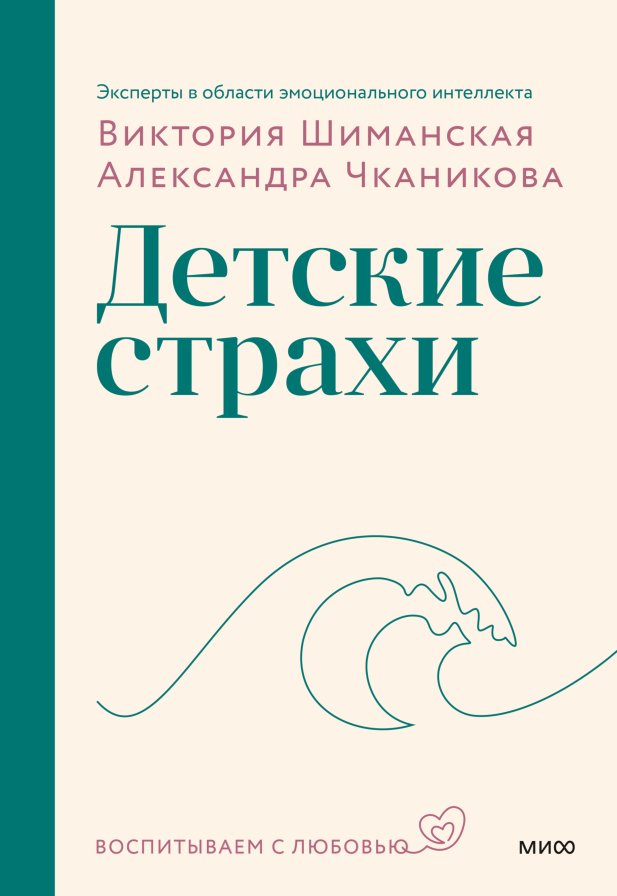
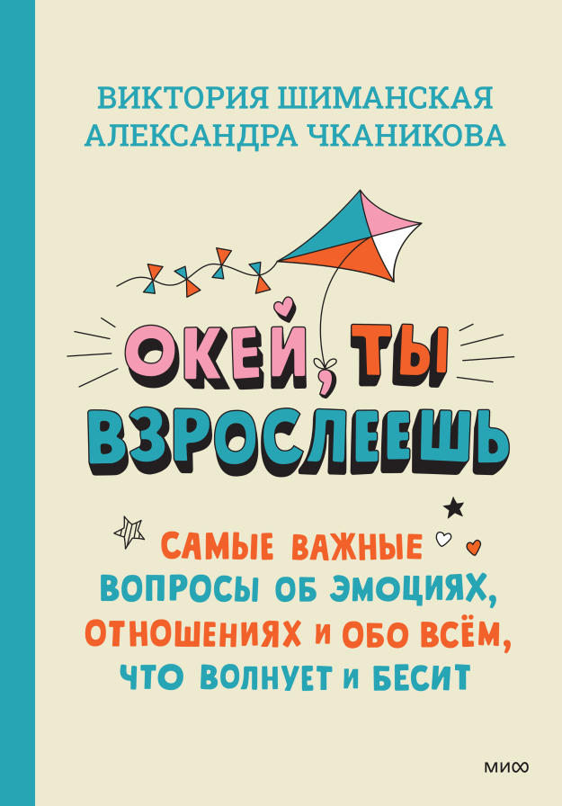

Флаувау Фест
Фестиваль локальных брендов. Знакомство с событием через его идею, программу и активности — с понятным переходом к регистрации.
- На странице
- Афиша, пять языков любви, карта фестиваля, регистрация и ответы на вопросы.
Фестиваль локальных брендов. Знакомство с событием через его идею, программу и активности — с понятным переходом к регистрации.
Подарки для сотрудников, клиентов и партнёров. Условия сервиса для бизнеса, преимущества корпоративного кабинета и начало работы.
Лендинг исследования о лояльности сотрудников и признании на работе. Представляет результаты опроса и приглашает получить полный отчёт.
На превью — снимки опубликованных страниц. Дизайн и визуальные материалы — Flowwow и команды проектов.
Навигация по фестивалю и короткие описания партнёрских активностей.
Запрос: знаки зодиака даты
Широкая справочная тема. Для запроса о датах полезно сразу показывать компактную таблицу; сезонный гороскоп лучше отделять от постоянного справочника.
Запрос: что такое бенто торт
Материал охватывает определение, размеры, дизайн, рецепт и вопросы читателей. Краткий ответ стоит вынести перед длинным оглавлением; цены и временные формулировки требуют обновления.
Запрос: мошенники доставка цветов
Сильное соответствие запросу: признаки обмана, сценарии и официальные каналы помощи. Полезно выделить короткий алгоритм действий и дату проверки рекомендаций.
Запрос: корпусные десерты рецепт в домашних условиях
Хорошее соответствие практическому запросу: рецепты разной сложности, ингредиенты и этапы. Для удобства читателя стоит явно выделять время, выход порций и необходимый инвентарь.
Запрос: открытки с добрым утром осенние
Визуальная подборка отвечает намерению скачать и отправить открытку. Для оценки результата особенно важны показы и переходы из поиска по картинкам; обычный текстовый поиск не даёт полной картины.
Запрос: икебана как сделать
Пошаговое руководство отвечает практическому запросу. Сильные элементы — материалы, инструменты и принципы композиции; полезно дополнить их кратким списком для первой попытки.
Пример текста на открытке.
Welcome-цепочка, реактивация, продуктовые новости и триггерные сообщения.
Тексты из рабочих материалов: варианты тем, кнопки и пометки сохранены. Условия предложений относятся к периоду соответствующих кампаний.
Три письма после регистрации или первого заказа с интервалом 3–5 дней. Полные рабочие тексты, включая варианты тем и пометки для сборки.
Как сказать главное без слов?
Подарки — наш язык любви. Они помогают передать теплые чувства и эмоции. На Flowwow найдется букет, который скажет «Ты моя единственная» и торт, который шепнет «Я рядом».
(визуал — пять говорящих товаров, как в облаке смыслов. Идея такая: у нас пять товаров, от них бабблы, типа говорящие подарки, в бабблах текст)
Клубника в шоколаде: Люблю тебя!
Цветок в горшке: Я всегда с тобой
Воздушный шарик/шарики: Спасибо за сына
Бенто-торт: Ты мой лучший друг
Букет цветов: Не скучай!
Для эмоций нет границ. Заказывайте подарок из любой точки мира с доставкой от 30 минут в 1200 городах.
Если любите дарить сами и видеть радость на лицах любимых, попробуйте самовывоз. Опция доступна в приложении. На каждый заказ, который вы забираете сами, даем 7% кешбэка.
Скачать приложение! - для десктопа
В нем можно списать накопленные бонусы, составлять вишлисты и отслеживать акции.
(куарчик)
Блок с кнопкой “скачать приложение” - для мобилки
Как вам наше письмо?
Грустный эмодзи - Нейтральный эмодзи - Веселый эмозди
Футер
Подарки близким — на радость вам!
Хороший подарок — это когда приятно не только тому, кто получает, но и тому, кто дарит. Для этого мы создали бонусную программу.
Выбирайте, бонусы или скидка?
В приложении Flowwow можно выбрать вид лояльности:
Накопительная скидка
Применяется автоматически, если покупаете в магазинах с WowPass
Растет в зависимости от суммарной стоимости ваших заказов
Бонусы на счет
Начисляются с каждой покупкой
1 балл = 1 рубль
Можно копить и использовать для оплаты следующих покупок
Делитесь с друзьями
В личном кабинете вас ждет уникальный промокод. Отправьте его другу: он получит скидку 15% на первый заказ, а вы — 500 бонусов на счет, как только первый заказ друга будет выполнен.
Поделиться скидкой!
Помогайте благотворительным фондам
Это так же легко, как дарить радость близким! Каждые 3 месяца в приложении появляются новые организации, в которые вы можете направить бонусы.
На Flowwow уже 90 тысяч спонсоров. За 3 года они перечислили в фонды более 23 млн рублей.
Как вступить в программу лояльности?
Вы уже в ней! Переходите в приложение и получайте максимум удовольствия от сервиса Flowwow.
Скачать приложение! - для десктопа
куар
Блок с кнопкой “скачать приложение” - для мобилки
Как вам наше письмо?
Грустный эмодзи - Нейтральный эмодзи - Веселый эмозди
Футер
Тоже иногда забываете кого-то поздравить?
Все в порядке, это с каждым бывает. А знаете что? Не держите в голове все эти даты! Просто занесите их в календарь приложения Flowwow.
Мы с радостью сохраним ваши личные поводы для подарка и будем напоминать, что пора порадовать близкого человека.
Как это работает?
Откройте календарь в мобильном приложении
Внесите важную дату
Все, можете о ней забыть! В нужный момент пришлем вам уведомление.
Что еще можно попробовать?
Автоматические напоминания. Вы делаете заказ, а через год сервис предлагает вспомнить, что это был за день.
Подборки друзей. Если у вашего близкого человека есть открытый вишлист, пришлем его вам: так проще выбрать подарок.
Ваш день рождения
Хотим в нужный момент поздравить вас и прислать 450 бонусов на счет. Чтобы мы могли это сделать, укажите вашу дату рождения в личном кабинете.
Создайте личную подборку и поделитесь с друзьями
Узнайте о скидке на товары, которые вы сохранили. Для этого просто скачайте приложение и включите пуш-уведомления.
Скорее заполните календарь и профиль — и забудьте о том, что трудно держать в голове.
Скачать приложение! - для десктопа
куар
Блок с кнопкой “скачать приложение” - для мобилки
Как вам наше письмо?
Грустный эмодзи - Нейтральный эмодзи - Веселый эмозди
Футер
Дуся — кошка, маскот Flowwow в продающих письмах. В этом кейсе она рассказывает о вещах, хранящих душевное тепло, с нативной интеграцией партнёра.
Где взять тепла?
Привет, дорогие!
Чем согреться в середине зимы? Шарф и чай — хорошо, но душевное тепло еще важнее. Его дарят нам близкие люди, оставляют на милых сердцу вещах.
Подсказываю: где прячется душевное тепло?
В чайном сервизе. Вспомните, как вы пили из него всей семьей.
В складках пледа или шали. Кто из ваших близких кутался в эту вещь чаще всего?
В горшке с цветком. Ведь вы поливаете его и ждете первых бутонов.
В коробочке с мылом. Аромат заботы и нежности!
В кувшине для лимонада. Летом к нему руки так и тянутся.
Чтобы зима не казалась бесконечной, окружайте себя вещами, которые хранят тепло человеческих отношений. Их всегда можно найти на Flowwow: уютную сервировочную посуду, живые растения, домашние сладости ручной работы.
А с семейными традициями помогут наши друзья из сервиса печати фотокниг «Периодика». Недавно они выпустили книгу «Будем ближе», в которой собрали 34 трогательных домашних обычая современных семей, которые приносят в жизнь героев книги больше тепла и счастья.
Давайте вдохновимся этим проектом — будем создавать собственные традиции и беречь воспоминания, которые согревают нас год за годом.
Берегите душевное тепло! Звоните друзьям, почаще обнимайте детей и гладьте домашних животных. Так и перезимуем!
Ваша мурчащая Дуся
Сезонная подборка для дома, десертов и впечатлений с партнёрским предложением. Май 2026.
Искусство отдыхать
Майские совсем близко!
Главное на длинных выходных — позволить себе отдохнуть. Предлагаю заняться по-настоящему важными и неотложными делами: окружить себя красотой, попробовать что-то новенькое и устроить себе хотя бы одно маленькое яркое приключение.
В доме весна
Май начинается с зелени, а отдых — с уюта. Достаточно пары зеленых растений на окне, чтобы преобразить дом. Лично я себе выбираю те, у кого листья резные: от них тень красивее.
Кнопки с категориями:
Флорариумы / Фикусы / Цветущие
Вкус долгих выходных
Если вы давно хотели попробовать моти с матча, волосатый шоколад или муссовые пирожные — не откладывайте дольше! Открывайте каталог и заказывайте срочную доставку.
Кнопки с категориями:
Моти / Бенто-торты / Шоколад
Активность в кошачьем стиле
Экстрим — не для моих старых лапок. Лучше отправиться в эко-отель, сходить на урок живописи, провести день в спа или устроить фотосессию. Не буду мучиться с планированием, а просто закажу электронный сертификат. И вам советую!
Кнопки с категориями:
Отдых в отеле / Мастер-классы и активности / Уход за собой
Много лосося (не) бывает!
Если вы, как и я, питаете особую нежность к рыбе, ловите супер вкусное предложение от Много лосося.
До 25 мая свежие суши и роллы можно заказать со скидкой 20%. Промокод ВАУФЛАУВАУ действует только на первый заказ от 900 рублей в мобильном приложении Много лосося. Подробнее об акции
Партнерский блок
Промокод
ВАУФЛАУВАУ
Условия Промокода
Вкусные и свежие суши и роллы Много лосося с доставкой и скидкой 20% на первый заказ по промокоду ВАУФЛАУВАУ .
Дисклеймер акции
Промокод действует в мобильном приложении Много лосося с 24.04 по 25.05.2026 включительно при первом заказе от 900 рублей. Подробности на about.mnogolososya.ru
Реактивационное письмо с предложением пополнить корпоративный счёт и обзором возможностей сервиса.
Пополните корпоративный счет и получите 5 000 рублей
Актуальное решение накануне 23 Февраля и 8 Марта
Кнопка — В личный кабинет
Со времени вашего последнего заказа наше корпоративное направление далеко продвинулось:
помогаем доставлять срочные заказы во всех регионах России;
добавили в ассортимент подарочные сертификаты и свежие цветы пачками, чтобы вы могли самостоятельно собрать букеты;
привлекаем персонального менеджера, который посоветует актуальный подарок и проконсультирует по всем вопросам.
Предлагаем заглянуть на Флаувау и пополнить депозит. Положите на счет 15 000 рублей — и мы начислим вам еще 5 000 рублей в подарок или пришлем промокод на эту сумму.
Получить скидку!
Чтобы узнать больше, напишите менеджеру
(имя менеджера, контакт)
Задать вопрос
Продуктовое письмо о ребрендинге: причины обновления и объяснение нового визуального языка.
Новый образ Flowwow
Представляем наш новый логотип и фирменный стиль
В жизни каждого бренда наступает момент, когда нужно посмотреть на себя со стороны и обновить привычный образ. С гордостью представляем вам новый фирменный стиль Flowwow.
Мы привнесли в него свежие черты, а уже знакомым придали дополнительный смысл, чтобы радовать вас еще больше и делать любой момент жизни особенным.
Всё о нашем ребрендинге
Глазами пользователя
Наш ребрендинг начался с масштабного исследования: мы опросили 2000 пользователей Flowwow, чтобы узнать, кто мы для вас, чем важны и какие вызываем чувства.
Результаты исследования легли в основу нового фирменного стиля, в котором каждая черта говорит:
Наша цель — дарить радость
Flowwow — не только про цветы
Мы давно вышли за рамки цветочного агрегатора: теперь в нашем каталоге более 20 товарных категорий и тысячи идей подарка для ваших близких.
(визуал про мультикатегорийность)
Подарок — как окно в особый мир
Каждый момент жизни может стать поводом для подарка. День рождения, свадьба, просто желание сказать прости — это окно в яркий мир человеческих эмоций.
Искусственный интеллект помогает нам создавать эти миры: необычные визуальные образы погружают вас в особую атмосферу, где бы вы ни находились.
(визуал про миры)
Ждите от нас новых сюрпризов и впечатлений — в креативах, иллюстрациях, открытках и дизайне упаковки.
Остаемся вашим Flowwow
Наше обновление не радикально: мы растем, открываем для себя новые возможности, но остаемся тем же заботливым подарочным сервисом, который вам знаком и близок. Именно поэтому наш фирменный цветок преобразился, но остался с нами как символ дарения, радости и эмоциональной теплоты.
Больше о ребрендинге
Сценарии по времени отправки, категории покупки и наличию товара. В каждом блоке — заголовок и текст одного пуша.
В исходнике также есть отдельная строка «Вернитесь к заказу» — без привязанного текста.
Дайджест и приглашение на очный тренинг. Весь текст доступного скриншота; продолжение письма, если оно было, в этом источнике не сохранилось.
Друзья!
Вчера завершился онлайн-курс Станислава Манерова о первой помощи. Было ярко, полезно, понятно, четко, хотя местами страшновато.
Теперь мы больше никогда не будем класть замерзшие ноги на батарею, кутать детей и пенить ожоги пантенолом до приезда врачей. А еще мы узнали, почему все спасатели Красного Креста уважают группу Bee Gees 😉.
Для вас мы подготовили гигантский дайджест пользы - семь главных «почему» о первой помощи с развернутыми ответами от Станислава Манерова. Если не вы не уверены, что сможете все запомнить – пожалуйста, распечатайте это письмо и держите при себе. Так мы будем уверены, что вы и ваши близкие застрахованы от самых грубых ошибок первой помощи.
Внимание! Без практики многие из нас чувствуют себя неуверенно. Чтобы отточить мастерство и освоить приемы первой помощи не только “головой”, но и “руками”, регистрируйтесь на очный тренинг Станислава Манерова, который пройдет в Москве 10 и 12 июля, с 19.00 до 22.00.
Записываюсь на очный тренинг!
Объяснение последствий переключения на самовывоз и условий возврата стоимости доставки.
Переключить на самовывоз?
После этого заказ уже нельзя будет доставить курьером
Сообщение получателю: «Вид доставки изменился. Время и адрес больше не нужны: отправитель переключил заказ на самовывоз».
Персональные итоги в формате сториз внутри приложения.
Короткие игровые формулировки для персональных достижений.
Тексты заданий и наград в бонусной механике.

Как говорить с ребёнком о страхах без обесценивания и помочь ему справляться с тревогой. В книге — практические задания, игры и примеры диалогов для разных ситуаций.
О книге
Ответы на 33 вопроса подростков об эмоциях, дружбе, отношениях и выборе будущего. Каждый вопрос сопровождают полезные практики, которые помогают лучше понять себя.
О книгеЛичная история о материнской любви и праве на собственную радость. В AdMe прямо указаны Александра Чканикова и проект Family Tree.
Научно-популярная статья для «ТехИнсайдера».
Статья в Дзен Флаувау о крупных комнатных растениях, весна 2026
Экспертный материал дизайн-директора Flowwow Дарьи Бучаковой о создании клиентских рассылок: от визуальной метафоры до работы команды и оценки результата. · Моя роль — Редактор материала
Конкурсный кейс о развитии ORM-команды, работе с отзывами и жалобами и подготовке к сезонным пикам нагрузки. · Моя роль — Редактор материала
О свете, поливе и месте замиокулькаса в интерьере — с комментариями биолога-фитопатолога Лении Крымской.
Пять десертов из старой семейной кулинарной книги: советский «Муравейник», хворост, пирожное «Картошка» и другие лакомства.
Как использовать ароматы в повседневной жизни: проснуться с улыбкой, взбодриться без кофе и лучше сосредоточиться. Ароматерапия не заменяет лечение.
Идеи досуга через любимых персонажей сериалов: сезонный материал о внимании к себе.
Практическое руководство по цветам, фактурам и деталям осеннего стола.
Подбор подарков ко Дню учителя через характер и привычки получателя.
Подарки и сценарии совместного времяпрепровождения в сезонной подборке.
Личная история о ритме жизни, соседстве и культурных различиях.
Повседневная жизнь у моря, рассказанная через погоду и смену сезонов.
Материал о влажности и бытовом опыте жизни на побережье.
Корпоративный заказ для 600 сотрудников: поиск кондитера, согласование дизайна и доставка стокилограммового торта к юбилею компании.
Материал об исследовании признания и мотивации сотрудников.
Кейс масштабного корпоративного поздравления.
Практический материал для работодателей о возвращении команды в офис.
Интервью с Ирэной Голубой о договорённостях в паре. В публикации указаны источник Family Tree и имя интервьюера Александры Чканиковой.
Материал по выступлению Виктории Шиманской: неожиданный взгляд на привычные родительские жалобы. В публикации указано ваше имя.
Статья для ГК «Пионер», опубликована в Дзене в 2020 году Хочу быть женщиной, а не управдомом
История путешествия для «Вокруг света» из серии материалов сотрудников Flowwow.
История путешествия для «Вокруг света» из серии материалов сотрудников Flowwow.
Опыт перестройки растущей команды разработки: автономные команды, распределение ответственности и результаты внедрения Spotify-модели.
Кейс об организации контроля качества в компании, где продукт постоянно меняется.
Экспертная статья о психологии успеха предпринимателя, работающего по франшизе. Опубликована в «Бизнес-секретах».
Два варианта сообщения для каждой кампании. Концепты баннеров созданы для портфолио на основе слоганов из рабочих документов.
Визуализации показывают, как слоганы могут работать в рекламе. Это драфты для портфолио, а не подтверждённые рекламные размещения. Реалистичные изображения товаров созданы с помощью ИИ.